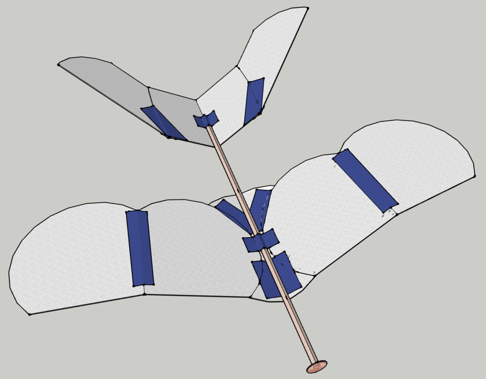
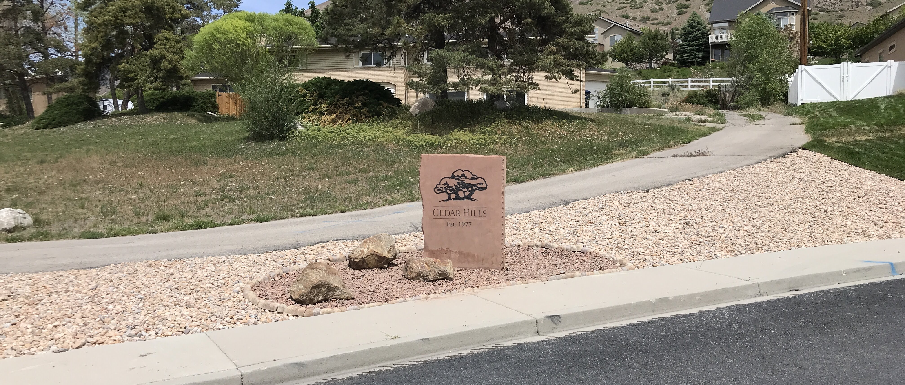

About Me
-
A junior studying Mechanical Engineering and Computer Science (3.80 GPA) at Brigham Young University. Graduation expected in April 2024.
-
Passionate in the areas of mechatronics, computer programming, simulation, automation, and aeronautics.
-
A trustworthy and dedicated man who has the communication and social skills to work with others and get things done.
Professional Job Experience
Mechatronics Class TA at BYU ( Fall 2022 - current )
Teaching students how to wire and program PIC microcontrollers and other electronics so they can succeed in their end-of-semester team project consisting of building a robot that has to complete various tasks.
Intern for Solution Development Simulation Team at Dematic ( Summer 2022 )
-
Developed a website for the Solution Development Division for internal use.
-
Implemented 4 new features to a Python project used to speed up the process of custom GitLab asset clone synthesis.
-
Led in development of a new custom Python program to be used to quickly validate large customer order data files, sometimes 100,000 entries long, before use in simulation projects.
VR Programmer and Research Assistant at BYU
( Aug 2020 - May 2022 )
Programmed a cross-platform, co-spatial, local-multiplayer VR project in Unity3D, which will be used for future human-human and human-robot co-manipulation research experiments. Learn more below in "Notable Accomplishments".
Secretary and Member of BYU's Drone Racing Team
( Aug 2017 - Dec 2021 )
Sent club emails to our 150 club members, recruited ~20 new members, and developed better ways to retain current members. As a team, we focused on providing members with opportunities to learn how to build and fly drones.
Useful Skills
| Mechanical Engineering | Programming | People Skills | Learning Skills |
|---|---|---|---|
| Mechatronics | MATLAB / Java / C++ / Python | Trustworthy | Quick Learner |
| Robotics | Unity3D / C# / Arduino | Concise Communication | Organized |
| CAD Modeling & Design | HTML / CSS / Javascript | Sociable | Hard Working |
| Aeronautics | VR (Oculus and Vive) | Teamwork | Good Memory |
| Manufacturing | PIC Microcontrollers | Spanish Speaking | Aware |
Notable Accomplishments
Programmed an Arduino and wired it to a pair of large self-standing solar panels so they follow the sun each day.
My dad designed a pair of self-standing solar panel towers (combined power of 8.4 kilowatts) and had them manufactured and installed. He then commissioned me to make them follow the sun.
The end result was an Arduino I programmed that frequently reads the time from an RTC clock module to know when to power on the high-voltage relay switches. The relay switches then control the linear motors on the towers to tilt them to the correct angle throughout the day. I also wired up a small LCD screen to provide useful information about it's status. It has worked great ever since!
Programmed a cross-platform, local multiplayer, co-spatial VR project using Unity3D for an undergraduate research job in the Robotics and Dynamics Lab at BYU.
My work here has been to create a virtual environment so that experiments could be performed to track the motion of people working together to manipulate objects through complex obstacles.
Designed, built, and programmed a robot with my team in my Mechatronics class.
The objective was to get as many ping pong balls into the correct goals. The max permissible ball-carrying capacity was 2. Hence, we needed a fast, accurate collect-move-aim-shoot design to win, which we did!
Won the "Best Use of Engineering" award in a 2021 mechanical engineering contest at university by constructing a large 9ft tall trebuchet that could launch pumpkins nearly 300ft. (See videos)
In December 2020, the College of Engineering at BYU offered a competition for everyone to submit a 15-second video of a Rube Goldberg machine of their own creation. My friends and I had recently made a giant trebuchet for fun, so we decided to use it in our final video. We ended up winning the "Best Use of Engineering" award in the competition!
Placed 2nd in a 24-hour coding competition.
In 2016 my school district hosted a 24-hour coding competition at the Xactware building in Lehi, Utah. My team of 4 worked together throughout that day, evening, night, and next morning to make a game we called “Pit Stop Hero”.
Programmed a 2D planetary-motion physics simulator when I was 15.
Features include planet-mass-changer, click-and-drag, auto-orbit-around-largest-object, collisions, FPS-counter, pause, and reset.
Designed, built, and flew a successful RC plane from scratch during high school engineering class.
For my senior year of high school, I designed and built my own RC plane. It was something I had wanted to do for a long while, and the final-term personal project for the class was a great excuse for it. I selected the electronics, designed the plane in CAD, built it, and it flew! Now it's a great wall decoration in my parents' garage.
See video of the maiden flight, and an X-ray view of CAD below. CAD done in Google SketchUp.
Designed, built, and flew the winning glider in a high school engineering class competition.
Made out of styrofoam plates, painter’s tape, a stick of balsa wood, and a penny, this glider won the “max glide time” competition for my high school engineering class. It fell like a feather!
CAD done in Google SketchUp.
Taught and spoke with thousands of people about Jesus Christ in Spanish for 20 months in Peru as a full-time volunteer representative for The Church of Jesus Christ of Latter-day Saints. (LDS Service Mission)
-
Learned leadership, teamwork, trustworthiness, good memory, and hard work.
-
Learned listening, communicating clearly, and reading body language.
-
Also learned Spanish!

Earned the rank of Eagle Scout with double bronze at age 14.
Eagle Project: received permission, funded, designed, and installed a large stone marker engraved with the city's name and logo to be displayed at the south end of the city. The city marker on the once-barren corner is now enjoyed and seen by many.
